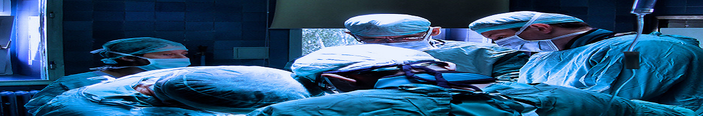
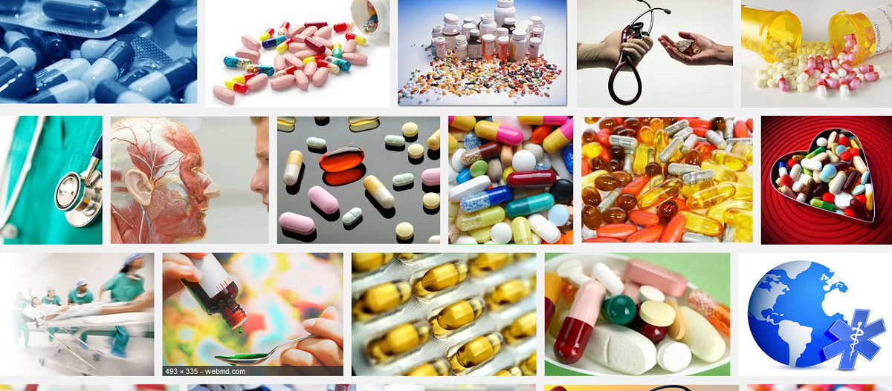
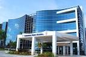
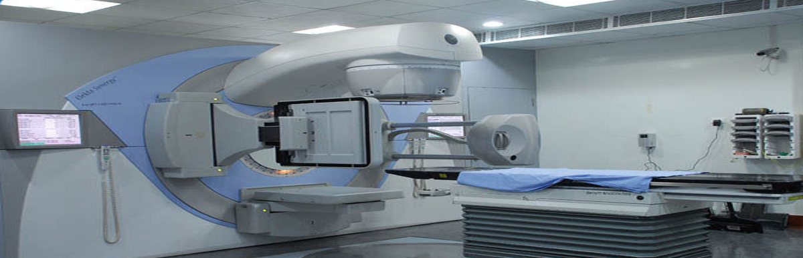
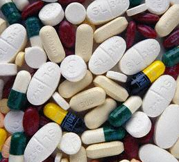

Medico Hospital Limited
Service is our vision
Departments List
Cardiology
 SHL is well-aware of the inadequate critical care services in Bangladesh. The ER, ICU and CCU are exceptionally well designed to rectify this. All ambulances will be staffed with trained paramedics. Two rooms in ER are dedicated as trauma rooms. Emergency Services 24-hour Emergency & Trauma Services with Express TRIAGE & Resuscitation area Emergency Cardiac Care Specialists Trauma Surgery Specialists 24-hour Ambulance Service Regional Helicopter Transport Service When a patient arrives at the ER, s/he will be seen at the ER triage area. Critical patients will immediately be sent to the area next to the triage area which is composed of 4 beds with intensive care facilities. Non-critical patients will travel to basement 1 via the lift located at the ER triage area. The lift connects the ER area to floors above where the patient can be transferred to ICU, CCU, OR and obstetric floor. This lift will not be used for any other purpose.
Medico heart center
 SHL is well-aware of the inadequate critical care services in Bangladesh. The ER, ICU and CCU are exceptionally well designed to rectify this. All ambulances will be staffed with trained paramedics. Two rooms in ER are dedicated as trauma rooms. Emergency Services 24-hour Emergency & Trauma Services with Express TRIAGE & Resuscitation area Emergency Cardiac Care Specialists Trauma Surgery Specialists 24-hour Ambulance Service Regional Helicopter Transport Service When a patient arrives at the ER, s/he will be seen at the ER triage area. Critical patients will immediately be sent to the area next to the triage area which is composed of 4 beds with intensive care facilities. Non-critical patients will travel to basement 1 via the lift located at the ER triage area. The lift connects the ER area to floors above where the patient can be transferred to ICU, CCU, OR and obstetric floor. This lift will not be used for any other purpose.
Intensive care center
 SHL is well-aware of the inadequate critical care services in Bangladesh. The ER, ICU and CCU are exceptionally well designed to rectify this. All ambulances will be staffed with trained paramedics. Two rooms in ER are dedicated as trauma rooms. Emergency Services 24-hour Emergency & Trauma Services with Express TRIAGE & Resuscitation area Emergency Cardiac Care Specialists Trauma Surgery Specialists 24-hour Ambulance Service Regional Helicopter Transport Service When a patient arrives at the ER, s/he will be seen at the ER triage area. Critical patients will immediately be sent to the area next to the triage area which is composed of 4 beds with intensive care facilities. Non-critical patients will travel to basement 1 via the lift located at the ER triage area. The lift connects the ER area to floors above where the patient can be transferred to ICU, CCU, OR and obstetric floor. This lift will not be used for any other purpose.
Save sergery center
 SHL is well-aware of the inadequate critical care services in Bangladesh. The ER, ICU and CCU are exceptionally well designed to rectify this. All ambulances will be staffed with trained paramedics. Two rooms in ER are dedicated as trauma rooms. Emergency Services 24-hour Emergency & Trauma Services with Express TRIAGE & Resuscitation area Emergency Cardiac Care Specialists Trauma Surgery Specialists 24-hour Ambulance Service Regional Helicopter Transport Service When a patient arrives at the ER, s/he will be seen at the ER triage area. Critical patients will immediately be sent to the area next to the triage area which is composed of 4 beds with intensive care facilities. Non-critical patients will travel to basement 1 via the lift located at the ER triage area. The lift connects the ER area to floors above where the patient can be transferred to ICU, CCU, OR and obstetric floor. This lift will not be used for any other purpose.
Pathology and Lab center
 SHL is well-aware of the inadequate critical care services in Bangladesh. The ER, ICU and CCU are exceptionally well designed to rectify this. All ambulances will be staffed with trained paramedics. Two rooms in ER are dedicated as trauma rooms. Emergency Services 24-hour Emergency & Trauma Services with Express TRIAGE & Resuscitation area Emergency Cardiac Care Specialists Trauma Surgery Specialists 24-hour Ambulance Service Regional Helicopter Transport Service When a patient arrives at the ER, s/he will be seen at the ER triage area. Critical patients will immediately be sent to the area next to the triage area which is composed of 4 beds with intensive care facilities. Non-critical patients will travel to basement 1 via the lift located at the ER triage area. The lift connects the ER area to floors above where the patient can be transferred to ICU, CCU, OR and obstetric floor. This lift will not be used for any other purpose.